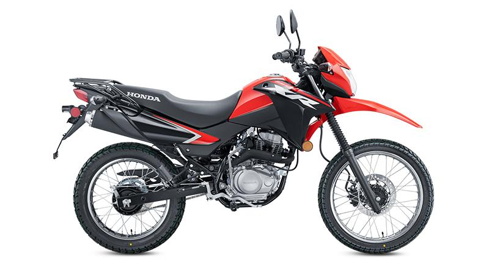

Ingeniería japonesa
Décadas de diseño y desarrollo aplicadas a motos para distintos estilos de conducción.
El camino empieza aquí
Del primer viaje por la ciudad a la ruta que siempre soñaste: descubre un mundo creado para rodar.
 ADN de competición · Fireblade
ADN de competición · Fireblade
Una marca, muchos caminos
Honda crea motocicletas para el uso diario, la aventura, los viajes y la pista. Cada estilo tiene su propio carácter y una manera distinta de vivir el camino.
Décadas de diseño y desarrollo aplicadas a motos para distintos estilos de conducción.
Modelos urbanos, doble propósito y touring para ir más allá del recorrido de todos los días.
La competición es parte de la historia de Honda y de su búsqueda constante de rendimiento.
El garaje Honda
Filtra por cilindrada y estilo. Las cifras de potencia y algunas especificaciones son aproximadas: cambian según el año y el mercado.
Catálogo educativo: los modelos y sus versiones pueden variar por país. Las fotografías son referencias visuales; algunas corresponden a otros años o versiones del mismo modelo. Potencia estimada en hp.
Desde Japón hacia el mundo
Soichiro Honda fue un mecánico e inventor apasionado por los motores. Junto a Takeo Fujisawa convirtió esa pasión en una compañía con presencia mundial.
Soichiro Honda funda el Honda Technical Research Institute en Hamamatsu, Japón, para desarrollar motores.
Soichiro Honda y Takeo Fujisawa establecen la compañía que impulsaría la expansión de la marca.
Honda presenta la Super Cub, una motocicleta práctica cuyo diseño se convertiría en un icono global.
La marca participa por primera vez en el Tourist Trophy de la Isla de Man y se abre paso en la competición internacional.
La CB750 Four lleva un motor de cuatro cilindros y freno delantero de disco a una nueva generación de motos de calle.
La CBR900RR FireBlade inaugura una familia de deportivas reconocida por su enfoque ligero y rendimiento.
Máquinas que hicieron historia
Innovación, aventura y millones de kilómetros: estas motocicletas representan distintas épocas del legado Honda.

Presentada en 1958, se convirtió en una de las motocicletas más influyentes y reconocibles del mundo.
Una saga de motos deportivas que lleva el espíritu de pista a las carreteras desde 1992.

Una viajera de aventura inspirada por los rallyes y pensada para recorrer largas distancias.
Pequeños datos, gran historia
La familia Super Cub superó los 100 millones de unidades producidas en 2017.
La Super Cub C100 fue diseñada para ser fácil de conducir y útil en la vida cotidiana.
La CB750 de 1969 popularizó el motor de cuatro cilindros en línea entre las motos de calle.
Honda debutó en las carreras del Tourist Trophy de la Isla de Man en 1959.
Mi garaje

Mi Honda XR 150L: una moto versátil para la ciudad y los caminos rurales.
La XR 150L es una motocicleta doble propósito, cómoda para los recorridos diarios y preparada para salir del asfalto.
Las especificaciones pueden variar ligeramente según el año y el país.
Tu próxima ruta te espera
Consulta los modelos disponibles y sus especificaciones en el sitio de Honda Colombia.
Visitar Honda Colombia ↗